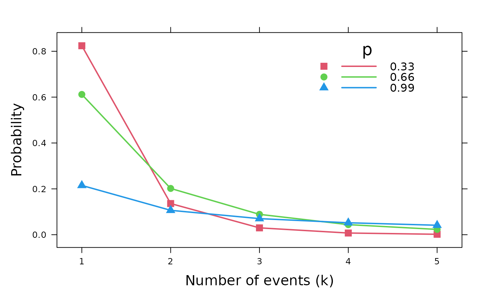
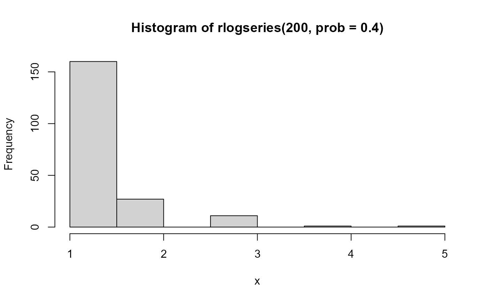

The logarithmic series distribution is a long-tailed distribution introduced by Fisher etal. (1943) in connection with data on the abundance of individuals classified by species.
Usage
dlogseries(x, prob = 0.5, log = FALSE)
plogseries(q, prob = 0.5, lower.tail = TRUE, log.p = FALSE)
qlogseries(p, prob = 0.5, lower.tail = TRUE, log.p = FALSE, max.value = 10000)
rlogseries(n, prob = 0.5)Arguments
- x, q
vector of quantiles representing the number of events.
- prob
parameter for the distribution,
0 < prob < 1- log, log.p
logical; if TRUE, probabilities
pare given aslog(p)- lower.tail
logical; if TRUE (default), probabilities are \(P[X \le x]\), otherwise, \(P[X > x]\).
- p
vector of probabilities
- max.value
maximum value returned by
qlogseries- n
number of observations for
rlogseries
Value
dlogseries gives the density,
plogseries gives the cumulative distribution function,
qlogseries gives the quantile function, and
rlogseries generates random deviates.
Details
These functions provide the density, distribution function, quantile
function and random generation for the logarithmic series distribution with
parameter prob.
The logarithmic series distribution with prob = \(p\) has density
$$ p ( x ) = \alpha p^x / x $$ for \(x = 1, 2, \dots\),
where
\(\alpha= -1 / \log(1 - p)\) and \(0 < p < 1\).
% Note that counts x==2 cannot occur.
References
https://en.wikipedia.org/wiki/Logarithmic_distribution
Fisher, R. A. and Corbet, A. S. and Williams, C. B. (1943). The relation between the number of species and the number of individuals Journal of Animal Ecology, 12, 42-58.
Author
Michael Friendly, using original code modified from the
gmlss.dist package by Mikis Stasinopoulos.
Examples
XL <-expand.grid(x=1:5, p=c(0.33, 0.66, 0.99))
lgs.df <- data.frame(XL, prob=dlogseries(XL[,"x"], XL[,"p"]))
lgs.df$p = factor(lgs.df$p)
str(lgs.df)
#> 'data.frame': 15 obs. of 3 variables:
#> $ x : int 1 2 3 4 5 1 2 3 4 5 ...
#> $ p : Factor w/ 3 levels "0.33","0.66",..: 1 1 1 1 1 2 2 2 2 2 ...
#> $ prob: num 0.82402 0.13596 0.02991 0.0074 0.00195 ...
require(lattice)
#> Loading required package: lattice
#>
#> Attaching package: ‘lattice’
#> The following object is masked from ‘package:seriation’:
#>
#> panel.lines
#> The following object is masked from ‘package:gnm’:
#>
#> barley
mycol <- palette()[2:4]
xyplot( prob ~ x, data=lgs.df, groups=p,
xlab=list('Number of events (k)', cex=1.25),
ylab=list('Probability', cex=1.25),
type='b', pch=15:17, lwd=2, cex=1.25, col=mycol,
key = list(
title = 'p',
points = list(pch=15:17, col=mycol, cex=1.25),
lines = list(lwd=2, col=mycol),
text = list(levels(lgs.df$p)),
x=0.9, y=0.98, corner=c(x=1, y=1)
)
)

# random numbers
hist(rlogseries(200, prob=.4), xlab='x')

hist(rlogseries(200, prob=.8), xlab='x')